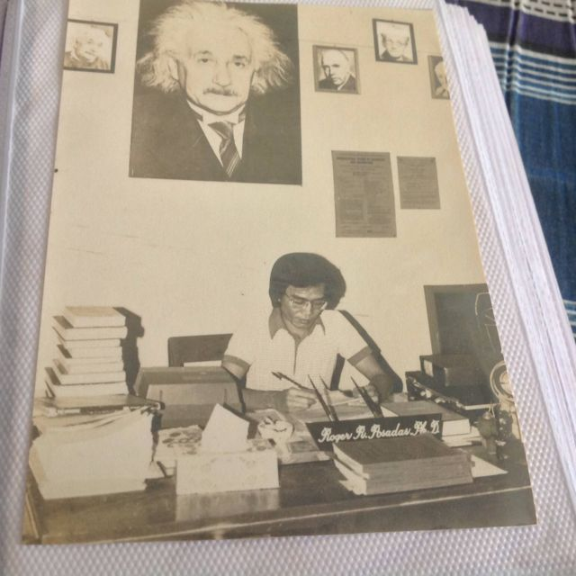
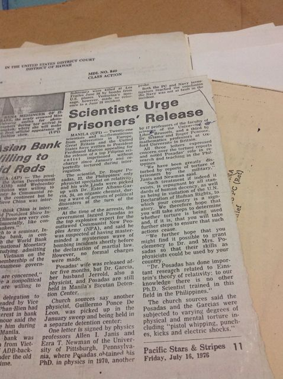
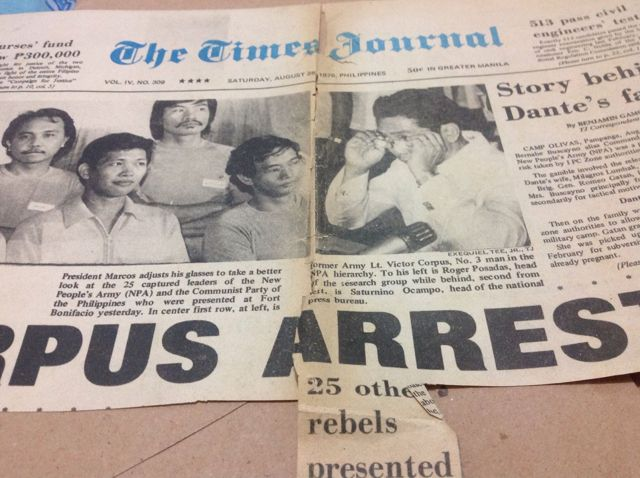
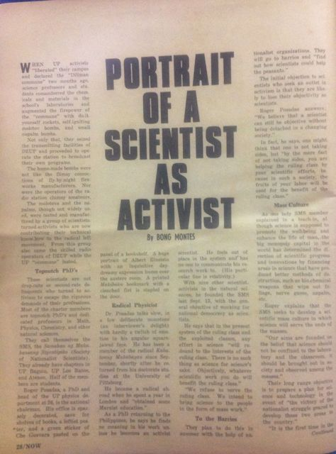
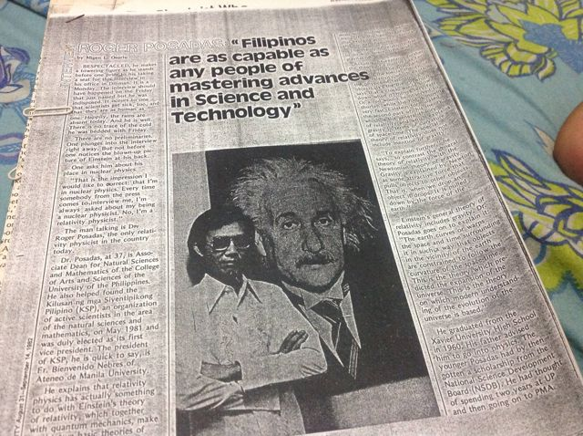
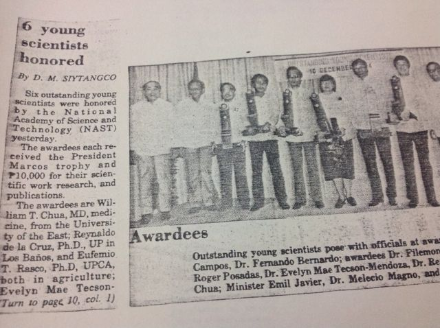
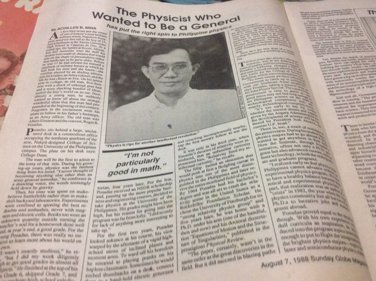

Dad
Dr. Roger Dela Rosa Posadas · Oktubre 17, 1944 hanggang Agosto 20, 2017
Pisiko ng relativity, aktibista, bilanggong pampulitika, at tagapagtayo ng agham sa Pilipinas. Propesyonal na website ito, at siya ang dahilan kung bakit ako may propesyon.
Bakit may pahinang ito
Pisiko at guro ang aking ama. Naniwala siyang dapat maglingkod sa sambayanan ang agham, at na naitatayo ng isang bansa ang sarili nito sa pamamagitan ng mga taong marunong magtayo. Nakulong siya dahil kumilos siya ayon sa paniniwalang iyon, at ginugol niya ang natitira niyang buhay sa pagtatayo ng mga institusyong nagbibigay-daan sa mga Pilipinong siyentipiko na mag-aral at magtrabaho sa sariling bayan. Pumanaw siya noong Agosto 2017. Lahat ng ginawa ko mula noon, mula sa pagsapi sa militar upang makapag-aral ng inhinyeriya hanggang sa pagsisimula ng PhD tungkol sa kung paano nakararating ang tubig sa mga sambahayang Pilipino, ay nagmumula sa kaniya.
Sa pagkakaalam ko, ito ang unang pagtatangkang pagsama-samahin ang buo niyang kuwento sa iisang lugar. Kung nakilala mo siya, nakatrabaho, o may hawak kang dokumento o larawan, sumulat ka sa akin.
Sa pagsunod sa kaniyang mga yapak, pinili kong maging civil engineer upang matutuhan kung paano hubugin ang itinayong kapaligiran para sa kapakanan at kabutihan ng tao at ng kalikasan.

Ang kaniyang linya
- Lingayen, Pangasinan · 1944Ipinanganak noong Oktubre 17, 1944, sa panahon ng pananakop ng Hapon, panganay sa pitong anak nina Col. Rolando Posadas ng Hukbong Pilipino at Carmen de la Rosa. Ayon sa kuwento ng aming pamilya, ipinanganak siya habang nagtatago sa gubat noong digmaan, at kinailangan pang manumpa ng kaniyang ama sa isang affidavit upang mairehistro siya nang muling magbukas ang mga tanggapan matapos ang digmaan.
- Cagayan de Oro · 1960Lumipat-lipat ng paaralan kasabay ng mga destino ng kaniyang ama. Valedictorian ng Xavier University High School, at balak niyang sundan ang ama sa Philippine Military Academy. Humina ang kaniyang mata sa kaaaral, at hindi na siya nakapasok.
- UP Diliman · 1960 hanggang 1964Pumasok sa Unibersidad ng Pilipinas bilang iskolar ng National Science Development Board, at "Physics" lamang ang isinulat niya sa form. Nahumaling siya sa relativity ni Einstein sa ikatlong taon. Unang pangulo ng UP Physics Society. B.S. Physics, 1964, saka isang taon bilang instruktor.
- Pittsburgh · 1965 hanggang 1970Dinala siya ng grant ng Rockefeller Foundation sa University of Pittsburgh at sa grupo nito sa relativity sa ilalim ni Ezra T. Newman. Nilaktawan niya ang master's at natapos ang Ph.D. noong Mayo 1970, sa loob ng apat at kalahating taon, sa disertasyon tungkol sa galaw at istruktura ng mga singularity sa general relativity. Naglathala siya sa Physical Review Letters, Physical Review at Journal of Mathematical Physics, dumalaw sa mga grupo sa relativity sa London at Cambridge, at tinupad ang pangako ng iskolarsip na umuwi.
- UP Physics · 1970Assistant professor noong Hunyo 1970 at tagapangulo ng departamento ng pisika makalipas ang isang buwan, sa edad na 25. Itinatag niya ang Samahan ng Makabayang Siyentipiko (SMS), ang kauna-unahang organisasyon ng mga makabayang siyentipiko at estudyante ng agham sa bansa, at kasamang nagtatag ng SAGUPA, ang aktibistang unyon ng mga guro.
- Diliman Commune · 1971Nang barikadahan ng mga estudyante at guro ang kampus noong Pebrero 1971, ang mga siyentipiko ng SMS ang gumawa ng mga self-igniting na molotov na ginamit ng mga tagapagtanggol laban sa Metrocom, at ang SMS ang gumawa ng unang seryosong pag-aaral sa pagtaas ng presyo ng langis noong 1970. Matapos ang pambobomba sa Plaza Miranda at ang suspensiyon ng habeas corpus nang Agostong iyon, kasama ang pangalan niya sa listahan ng mga aktibistang hinahanap dahil sa subersiyon. Nagtago siya, at nanatiling nakatago hanggang sa batas militar.
- Inaresto · Enero 1976Nahuli noong Enero 1976 at tinawag ng rehimen na pinuno ng military research ng Partido Komunista. Pinahirapan siya habang iniimbestigahan, ikinulong nang walang kontak sa labas nang mahigit dalawang buwan, saka ikinulong sa Bicutan at Camp Crame. Hindi siya kailanman pormal na kinasuhan.
- Ang kampanya · 1976 hanggang 1978Itinuring siya ng Amnesty International na prisoner of conscience. Sumulat kay Marcos sina Kip Thorne, Roger Penrose at Dennis Sciama, Werner Israel, Bruno Bertotti, Heinrich Leutwyler, ang kaniyang mga guro sa Pittsburgh na sina Allen Janis at Ezra Newman, at ang pangulo ng American Physical Society. Nagpasa ang Texas Symposium on Relativistic Astrophysics ng resolusyong nagpapahayag ng panghihinayang sa kaniyang pagkawala. Mula sa bilangguan, ginabayan niya ang master's thesis ng isang estudyante ng UP sa pamamagitan ng pagpapasahan ng mga kalkulasyon.
- Pinalaya · Oktubre 1978Pinalaya matapos ang dalawang taon at siyam na buwan. Nang taon ding iyon, inanyayahan siya sa organizing committee ng Einstein Centennial, ang nag-iisang pisiko mula sa Timog-Silangang Asya.
- UP · 1980 hanggang 1993Muling tagapangulo ng pisika mula Enero 1980. Ginawa niyang limang taon ang B.S. na may kinakailangang thesis at sinimulan ang kauna-unahang programang Ph.D. sa pisika sa bansa. Noong 1981, tumulong siya sa pagtatatag ng Kilusan ng mga Siyentipikong Pilipino. Bilang associate dean, ginawa niyang pambansang sentro ng kahusayan ang pisika, heolohiya at ang Natural Sciences Research Center, saka inihiwalay ang agham sa isang bagong College of Science noong 1983 at pinamunuan ito bilang unang dekano sa tatlong termino. Lumaki ang bilang ng mga gurong may Ph.D. mula 44 hanggang 104, at ang mga bago nitong gusali ang naging simula ng UP Science Complex. Pinarangalan siyang Outstanding Young Scientist noong 1984, at kasama siya ng mga pisiko ng UP sa EDSA noong Pebrero 1986.
- Tsanselor · 1993 hanggang 1996Hinirang na Tsanselor ng UP Diliman noong Nobyembre 1, 1993, at itinalaga noong Hulyo 22, 1994, sa ilalim ng islogang "Makabayang Kultura, Makabagong Teknolohiya." Isinulong niya ang Filipino bilang wikang panturo, itinatag ang Technology Management Center noong 1995, at itinayo ang UP Diliman Information Office, ang Center for Environmental Research, Education and Services, ang Archaeological Studies Program at ang Materials Science and Engineering Center. Ipinagtanggol din niya ang mga estudyante nang tangkain ng mga ahente ng NBI na mang-aresto sa kampus nang walang warrant.
- Technology management · 1996 hanggang 2016Bumaling sa tanong kung paano humahabol ang mga bansa: technology management, patakarang pang-industriya, at ang maaaring matutuhan ng Pilipinas sa South Korea at Taiwan. Nagturo siya sa Technology Management Center, humawak ng mga tungkulin sa agham at teknolohiya sa STI at sa University of the East, at pinamunuan ang Research and Innovation Center ng Lyceum of the Philippines University sa Cavite. Sa edad na 69, muli siyang ninominahan bilang tsanselor ng UP Diliman.
- 2017Pumanaw noong Agosto 20, 2017, sa edad na 72.
Dalawang linya pabalik kay Einstein
Sa pisika, binibilang ang mga estudyante ayon sa kung sino ang nagsanay sa kanila. Dalawang beses bumabalik kay Albert Einstein ang linya ni Dad.
- Inirekomenda ni Albert Einstein si Philipp Frank bilang kaniyang kahalili sa Prague, 1912.
- Si Frank ang tagapayo ni Peter G. Bergmann sa Ph.D. sa Prague, 1936. Naging research assistant ni Einstein si Bergmann sa Institute for Advanced Study sa Princeton, 1936 hanggang 1941, at sumulat sila ng mga papel nang magkasama.
- Si Bergmann ang tagapayo ni Ezra T. Newman sa Ph.D. sa Syracuse, 1956. Kalaunan, binuo ni Newman ang Newman–Penrose formalism at natuklasan ang Kerr–Newman black hole.
- Si Newman ang tagapayo ni Roger D. Posadas sa Ph.D. sa Pittsburgh, 1970.
- At narito ako, ang kaniyang anak: inhinyero, hindi pisiko, pero nasa linya pa rin.
Si Roger Penrose, katuwang ni Newman, ay isa sa mga pisikong sumulat kay Marcos para sa paglaya ni Dad. Mga sanggunian: Mathematics Genealogy Project, INSPIRE-HEP, Institute for Advanced Study, at Physics Today.
Bago ang pisika
Lumaki siyang nangangarap maging heneral. Anak ng isang opisyal ng hukbo, lumipat-lipat siya ng paaralan kasabay ng mga destino ng ama at ginugol ang kabataan sa mga kunwaring larangan ng digmaan, binabasa si Napoleon sa halip na mga magnet at baterya. Balak niyang mag-aral ng dalawang taon ng inhinyeriya sa UP saka pumasok sa Philippine Military Academy. Naunahan siya ng relativity, at ang pag-aaral nito ang kumuha sa paningin na hinihingi ng akademya.
Aktibista at bilanggong pampulitika
Hindi naniniwala si Dad na maaaring maging neutral ang isang siyentipiko. Para sa kaniya, ang hindi pagpanig ay nangangahulugang mapupunta lamang ang iyong gawa sa paglilingkod sa mga may hawak na ng kapangyarihan, kaya pumanig siya sa sambayanan at inorganisa ang iba pang siyentipiko na gawin din iyon. Inilabas ng Samahan ng Makabayang Siyentipiko ang agham mula sa laboratoryo: sa mga baryo, sa mga pagdinig tungkol sa presyo ng langis, at sa mga barikada ng Diliman Commune.
Ginawang krimen iyon ng batas militar. Ginugol niya ang halos buong dekada 1970 sa pagtatago, at nang mahuli siya ng militar noong Enero 1976, pinahirapan siya at ikinulong nang dalawang taon at siyam na buwan nang hindi kailanman kinasuhan, una sa isang safe house, saka sa Bicutan at Camp Crame.
Hindi pumayag ang mga pisiko sa mundo na mawala siya. Dumating kay Marcos ang mga liham mula sa Caltech, Oxford, Brussels, Pavia, Bern, Waterloo at Pittsburgh, at mula sa pangulo ng American Physical Society. Itinuring siya ng Amnesty International na prisoner of conscience, nagpasa ang mga kumperensiya sa pisika ng mga resolusyon sa kaniyang pangalan, at noong 1978 ay hinihiling pa rin ng Physics Today sa mga mambabasa nito na sumulat sa Malacañang. Sa loob, patuloy siyang nagturo, ginagabayan ang thesis ng isang estudyante sa kabila ng mga pader ng bilangguan. Pinalaya siya noong Oktubre 1978 at agad na bumalik sa pagtatrabaho sa parehong unibersidad.

Pacific Stars and Stripes, Hulyo 16, 1976: hinihingi ng mga siyentipiko sa ibang bansa ang kaniyang paglaya. 
The Times Journal, Agosto 28, 1976: ipinarada siya ng rehimen sa harap ng press. 
Mula kay Allen Janis sa Pittsburgh, Oktubre 1976: hinawakan ng Amnesty International ang kaniyang kaso. 
Mula kay Kip Thorne kay Pangulong Marcos, Nobyembre 30, 1976. 
Mula kay Bruno Bertotti sa Pavia, Disyembre 1976, may kopya para sa kalihim ng tanggulan at sa kaniyang ama. Pinalabo ang address. 
Mula kay Werner Israel, tagapangulo ng program committee ng GR8, 1977. 
Mula kay Heinrich Leutwyler sa Bern, 1978: paanyayang ipinadala sa kaniyang departamento dahil hindi siya makapaglakbay.


Bubukas nang buong laki ang bawat dokumento. Mula ang mga ito sa mga papeles ng aming pamilya. Nasa Ingles ang mga dokumento.
Ang kaniyang itinayo
Nang bumalik siya, halos wala nang laman ang pisika sa UP; noong 1982, nawala sa departamento ang halos lahat ng mga Ph.D. nito dahil sa mga trabaho sa ibang bansa. Muli niya itong itinayo sa pamamagitan ng pagbibigay sa mga tao ng dahilan upang manatili: ang kauna-unahang programang doktorado sa pisika sa bansa, limang taong bachelor's na may tunay na thesis, mga laboratoryong kayang gumawa ng eksperimento, at ugnayan sa mga unibersidad sa Japan. Ang departamentong iyon ang naging National Institute of Physics. Saka niya ginawa rin ito para sa buong agham: inihiwalay niya ang College of Science mula sa Arts and Sciences noong 1983, higit sa dinoble ang mga gurong may Ph.D., at itinayo ang mga gusaling naging simula ng UP Science Complex.
Hindi siya tumigil sa paglaban sa publiko. Sumulat siya ng sakdal laban sa science board ng pamahalaan sa ilalim ni Marcos, nanguna sa mga petisyon laban sa isang kalihim ng agham, inilantad ang isang panlolokong tungkol sa deuterium, ipinaglaban ang pagtuturo ng pisika sa Filipino, at ginugol ang mga huling dekada sa technonationalism: ang ideyang makahahabol lamang ang Pilipinas kung itatayo nito ang sarili nitong kakayahang teknolohikal, gaya ng ginawa ng South Korea at Taiwan. Lagi niyang sinasabi na kasinghusay ng sinuman ang mga Pilipino sa pagkadalubhasa sa agham.
Paulit-ulit siyang tinatawag ng mga reporter na nuclear physicist, at paulit-ulit niya silang itinatama: relativity. Naaalala siya ng kaniyang mga kasamahan bilang perpeksiyonistang tila malayo pero patas, mahilig sa kape at sa pagkanta, at naghahain ng inumin sa kaniyang mga salu-salo pero hindi kailanman uminom.

Magasing NOW, 1971: ang radikal na pisiko at ang mga makabayang siyentipikong inorganisa niya. 
Ang kaniyang pampublikong sakdal laban sa National Science Development Board noong panahon ni Marcos. 
Panayam noong 1982, sa edad na 37, bilang associate dean para sa natural sciences at matematika. 
National Academy of Science and Technology, Outstanding Young Scientist, Disyembre 10, 1984. 
Mga pisiko ng UP sa People Power Revolution, Pebrero 24, 1986. 
Sunday Globe Magazine, Agosto 7, 1988: ang pisikong nais sanang maging heneral. 
Manila Standard, Nobyembre 20, 1988: bilang dekano, tungkol sa pagbabalik sa landas ng agham. 
Sa pisara, kasama ang mga field equation nina Maxwell at Einstein.


Ang aklat ng tsanselor
Nang italaga siya bilang Tsanselor ng UP Diliman noong Hulyo 22, 1994, binigyan siya ng unibersidad ng isang aklat-paggunita: Pagtatalaga kay Dr. Roger Posadas bilang Ika-limang Chanselor ng Unibersidad ng Pilipinas Diliman. Laman nito ang kaniyang talumpati sa Ingles at Filipino, isang talambuhay na isinulat ni Dekano Rogelio Sicat, at mga mensahe mula sa mga kasamahan, estudyante at unibersidad sa buong mundo. Ito ang pinagkunan ng malaking bahagi ng timeline sa itaas, kasama ang petsa ng kaniyang paglaya.
Isinulat ni Ester Garcia, na inaresto sa parehong paghuli noong 1976 at noon ay komisyoner na ng higher education, na isinakripisyo niya ang sarili niyang karera sa pananaliksik upang itayo ang pisika sa bansa. Si Danilo Yanga, na ginabayan ni Dad sa master's thesis mula sa bilangguan, ay naging dekano ng kolehiyong itinatag ni Dad. Ipinakilala siya ng student regent sa mga estudyante bilang aktibista ng Diliman Commune na kilala sa kaniyang mga molotov.
Ang kaniyang mga papel
Naka-link sa publisher ang mga papel sa pisika. Naka-host dito o naka-link ang mga open-access na papel. Nasa Ingles ang mga papel.
Pisika
- 1969DOI
- 1969DOI
- 1970DOI
- 1971DOI
- 1982PDF
Patakaran sa agham at teknolohiya
- 1999DOI
- 2006PDF
- 2009Open access
- 2015PDF
- 2015PDF
- 2015Link
Kasama ang kaniyang mga estudyante sa Technology Management Center at Lyceum
- 2015PDF
- 2015Open access
- 2015Open access
- 2016Open access
- 2016Open access
Kilala rin mula sa sarili niyang mga sanggunian, at wala pang kopya online: isang ulat ng Kilusan ng mga Siyentipikong Pilipino noong 1982 tungkol sa pagpapaunlad ng natural sciences at matematika; "Leapfrogging the scientific and technological gap" (1986, UP Press); "An assessment of the state of science and technology in the Philippines" (2000); at "An alternative technonationalistic framework for Philippine S&T development" (2004).
Sa pahayagan
Natagpuan sa Google News Archive at iba pang pampublikong archive. Karamihan sa mga link ay nagbubukas ng scan ng buong pahina. Nasa Ingles ang mga artikulo.
- 1967-04-06
- 1976-01-23
- 1976-09
- 1976-09-15
- 1976
- 1976-12-15
- 1984-12
- 1988-03-15
- 1988-08-23
- 1988-11-20
- 1989-04-28
- 1989-09-17
- 1994-07-01
- 1995-03-30
- 2005-01-04
- 2005-02-23
- 2015-12-13
- 2017-08-22
- 2017-08
Si Dad at ako


Ang dala ko
Hindi ako naging pisiko. Naging inhinyero ako, dahil nais kong gawin ang bahagi ng kaniyang pangarap na pinakadiretsong dumadampi sa tao: ang mga tubo, ang mga planta, at ang mga institusyong nagpapasya kung may tubig ang gripo ng isang pamilya. Ang mga tanong ko sa aking pananaliksik, tungkol sa kung bakit binibigo ng mga sistemang maayos sa papel ang mga taong umaasa rito, ay ang mga tanong din niya tungkol sa agham sa Pilipinas. Umaasa akong maiuwi ang gawaing ito, gaya ng ginawa niya.
Salamat, Dad.
Basahin pa ang tungkol sa kaniya
Gayundin: Richard Pierre Claude, Science in the Service of Human Rights (University of Pennsylvania Press, 2002), tungkol sa aktibismo para sa kalayaang pang-agham.